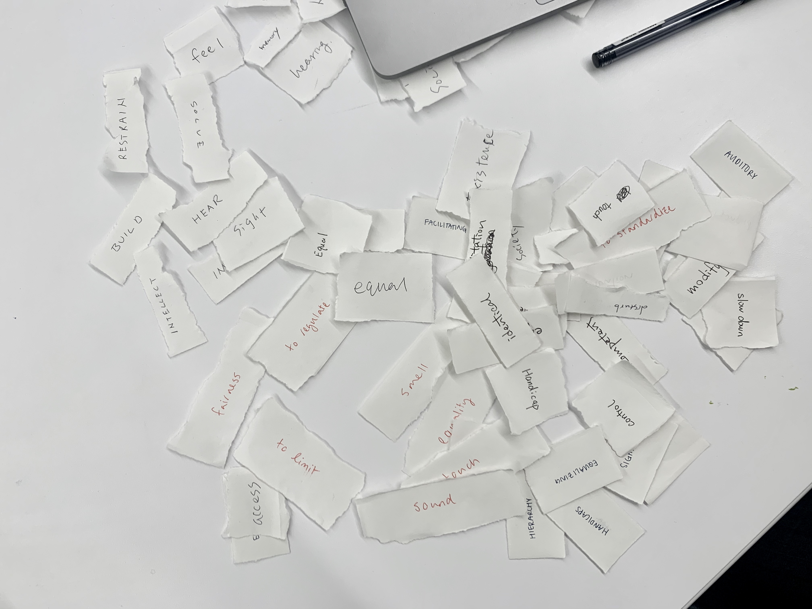
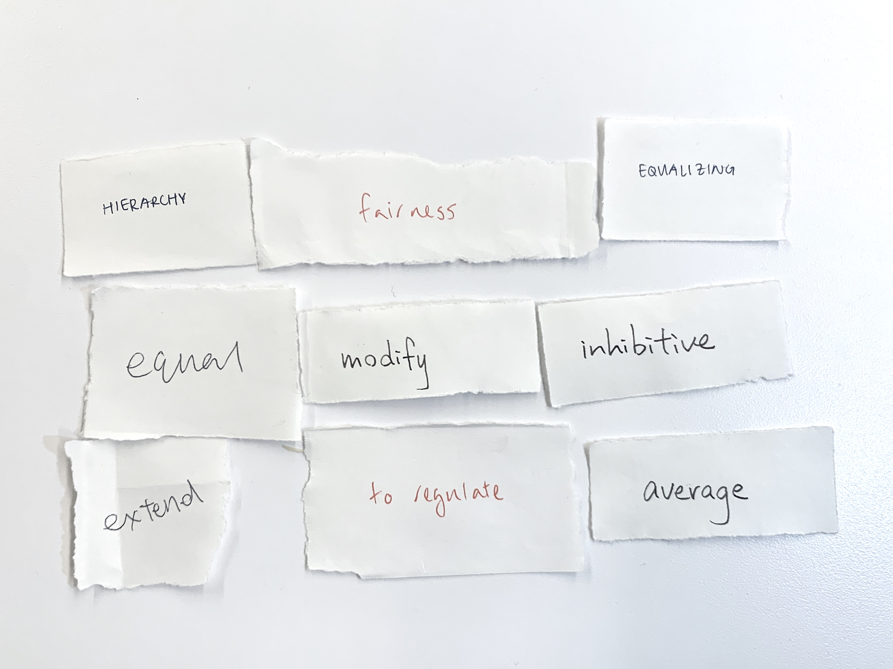
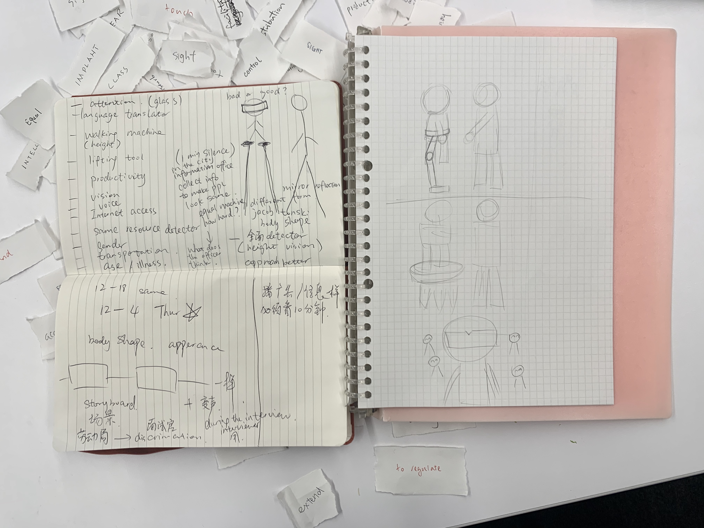
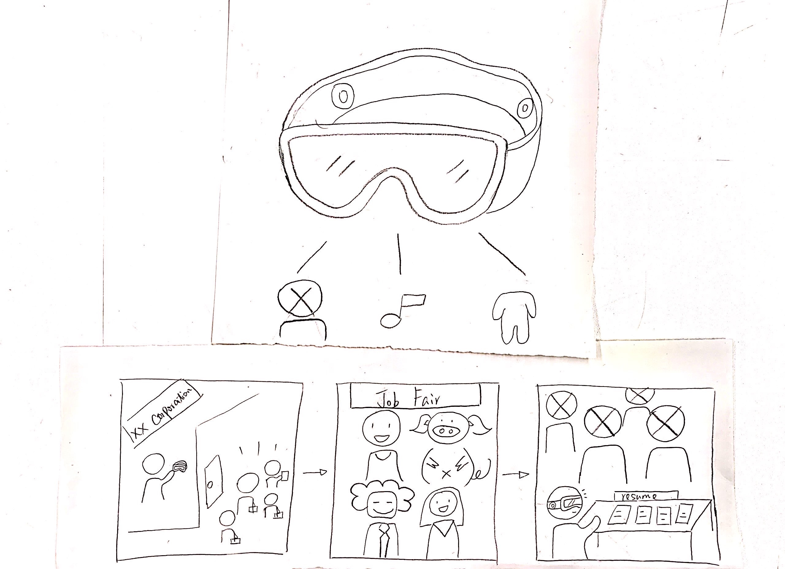
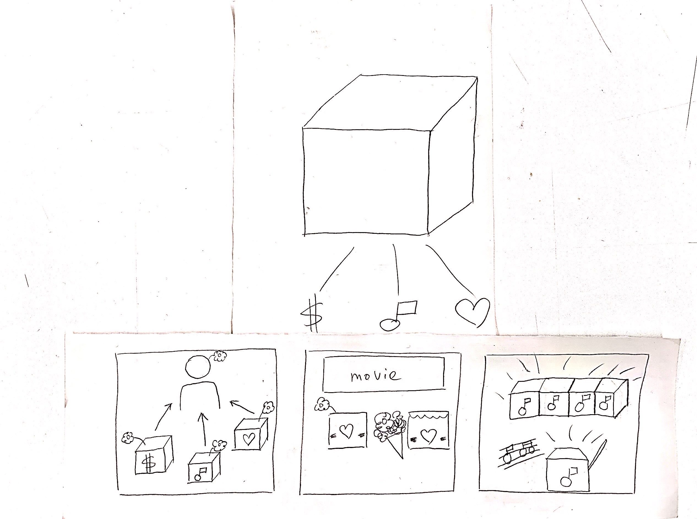
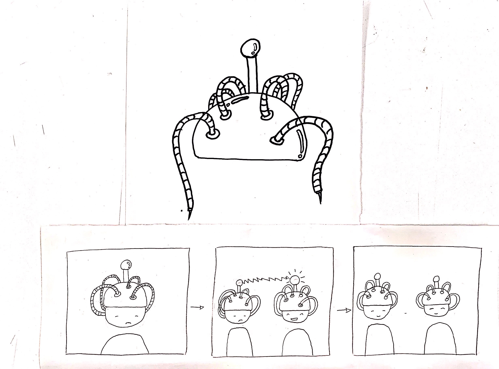

Group Prototype Brainstorm
WEEK 2 - WED, JAN 29TH, 2020team with Xueyi
From the reading Harrison Bergeron and When Every Child Is Good Enough, we defined augmentation as tools that modify capacities of human to facilitate equality/egalitarianism.
Verbs,noums and senses that represent augmentation.
  Prototype and storyboard
Our first prototype is the an pair of glass that can blur people's apperance. In the future of egalitariansm, every employer is reqired to wear these glasses in workplace, in order to eliminate lookism and further, racism and sexism.
 For the third prototype, we imaged in the world of egalitariansm, people should be able to empathize within their community so that people would have equal emotion. A emotional resonator is presented to neutralize people's emotion.
 Posted in Major Studio 2